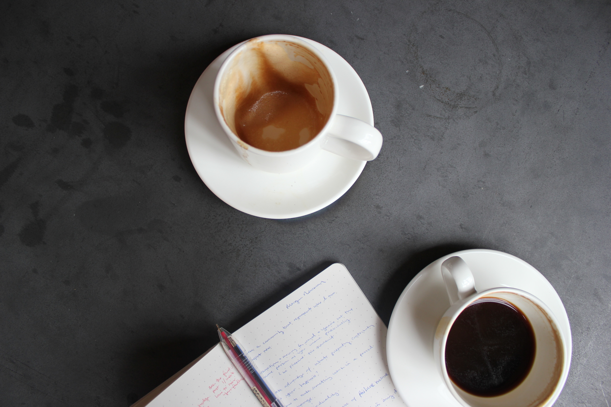
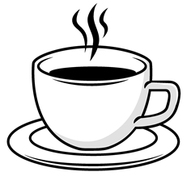
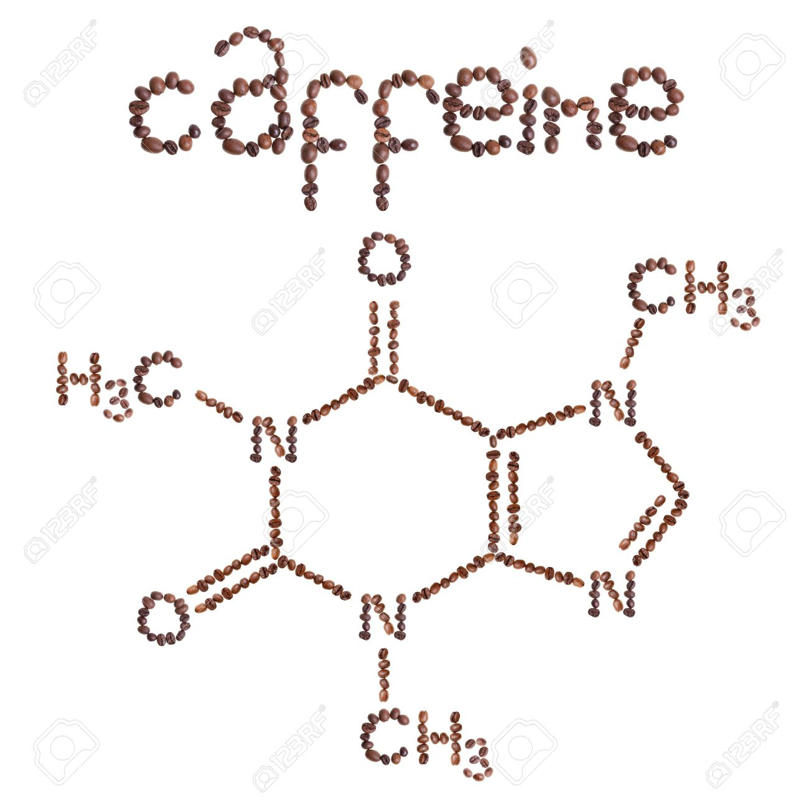

/que estres xd
Saltar al contenido
Sabrina coffees
Inicio
Nosotros
Blog
Galería
Videos
Contacto
Galería
Una selección de imágenes del material base de la evaluación.
01 / Una pausa entre las manos

02 / El inicio de una historia

03 / Los pequeños detalles

04 / Nuestro ingrediente favorito